Statistics & Computer Science, Economics · McGill University
Mael Tok
Versatile, deeply passionate and determined, I want to build a career in quantitative trading and research.
σ²t = 1.75 + 0.128·ε²t−1 + 0.807·σ²t−1, skewed-t shocks (η = 4.49, λ = 0.16)
Behind this text: alternate histories of Arafura Rare Earths (ASX: ARU), simulated from the GARCH model estimated in my paper.
Statistics, economics and markets
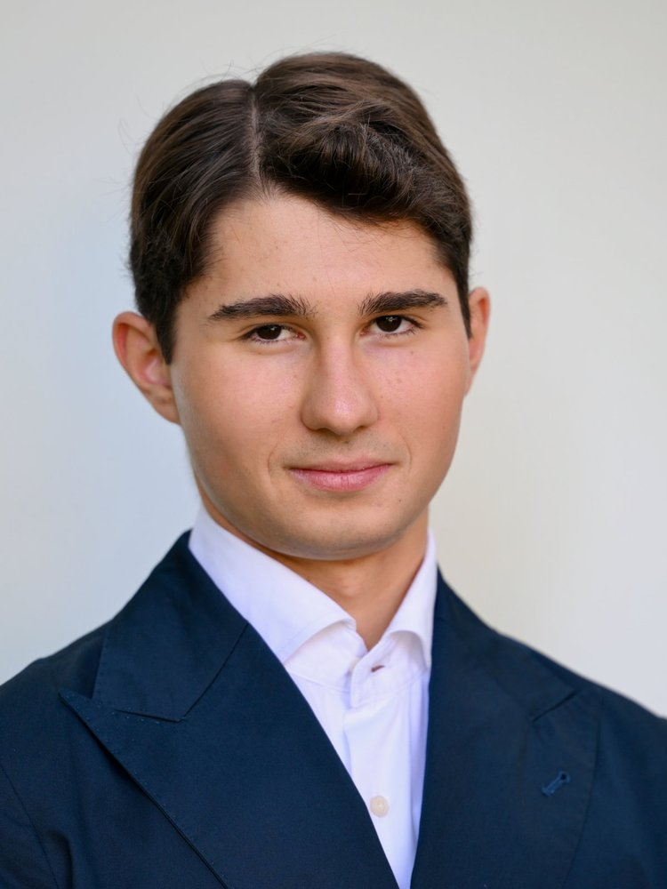
I'm a Joint Honours Statistics and Computer Science student at McGill University, with a minor in Economics.
Markets caught my attention at twelve, walking through Sydney's financial district, and I made my first investment that same year. Since then, I have written a research paper on the risk of an ASX rare-earth stock, now on SSRN, and built a portfolio optimizer that showed me how fragile "optimal" portfolios are.
What I want most is to work in quantitative trading or research. More broadly, I love understanding complex systems, from markets to physics, and using past data to form a view of where they are heading.
Places I've lived
Five countries so far, from Bern to Montreal by way of Montpellier, Sydney and the Black Forest.
Where I've worked and learned
University of Montpellier, Faculty of Economics
Research Internship with Dr. Roman Mestre
- Learned time-series econometrics: cleaned Bloomberg data for Arafura Rare Earths (ASX: ARU), ran CAPM market-model tests, and estimated GARCH and EGARCH models.
- Sole author of the resulting research paper, now on SSRN, with code on GitHub.
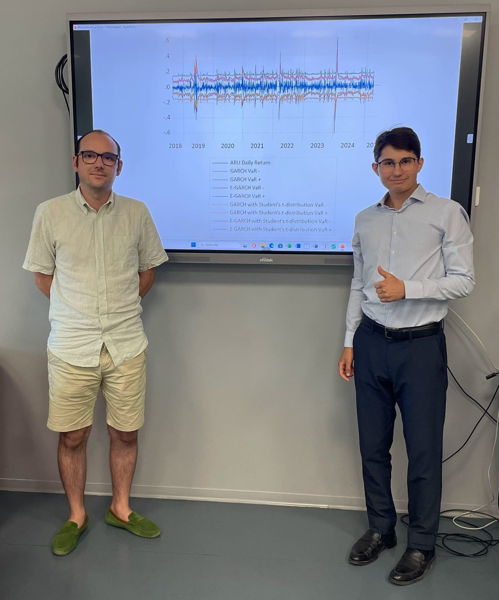
Morgan Stanley
Work Experience Placement
- Selected for the inaugural high school program at Morgan Stanley in France.
- Rotated across five divisions: technology, equity and fixed income trading floors, asset management and investment banking.
- Ran trading simulations, followed trade operations workflows, and analyzed beta-driven risk models.
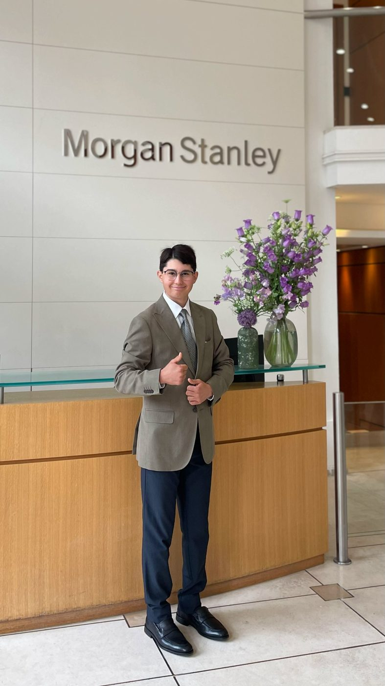
McGill Engineering & Science Students in Finance (MESF)
Associate Quantitative Researcher, Quantitative Finance Team · selected through competitive recruitment
- Testing whether Polymarket odds on US–Iran conflict predict weekend gaps in CME crude oil futures.
Research, projects and writing
An Empirical Study in Junior Mining Stock Risk Management: Weak-Form Efficiency Tests and Value-at-Risk Estimation with GARCH Models
A study of Arafura Rare Earths (ASX: ARU) from 2018 to 2025. A significant −0.11 return autocorrelation turns out to be bid–ask bounce on a coarse tick grid, not an exploitable inefficiency. Across 959 out-of-sample Value-at-Risk forecasts, Gaussian models understate the short seller's risk, a symmetric Student's t overstates the long holder's, and skewed-t and jump models pass every test.
Four-Asset Efficient Frontier in 3D
Nvidia, the S&P 500, Arafura and gold, with every long-only mix mapped as an interactive tetrahedron. Tested out of sample, the maximum-Sharpe portfolio promised a Sharpe ratio of 1.53 and delivered 0.88, below equal weight (0.92) and risk parity (1.10). A 2,000-resample bootstrap puts the "optimal" Nvidia weight anywhere from 21% to 71%.
Machines Read Stories Too: Do Algorithms Amplify Market Narratives?
From the 2013 "Hack Crash" to GameStop and AI-driven funds: algorithms do not remove narratives from markets. They inherit them, accelerate them and, increasingly, create them.
Why Do Clocks Move Like the Sun?
Clock hands track the Sun almost perfectly, yet the Sun has not driven them for centuries. A short essay on a correlation that outlived its cause, and what it says about patterns in markets.
Prediction markets and oil futures
A team project in the Quantitative Finance group of McGill's MESF club, testing whether Polymarket odds on US–Iran conflict anticipate the weekend reopening gap in CME crude oil futures. I'm responsible for the statistical testing.
Competitions, visits and the stage
Concours Général & Mathematics Olympiads
Selected for the 2026 Concours Général in both Mathematics and Economics, France's most prestigious academic competition, held since 1747. I was the only student in my class chosen for two subjects. I also competed in the 2025 French Mathematics Olympiads, in the individual and team rounds.
Before Success & The Growcast
With my best friend, I co-founded two podcasts, recorded across a 10-hour time difference between Sydney and Montpellier. We interviewed entrepreneurs, investors, coaches and athletes about how they think. The shows reached 2,000+ listens in 70+ countries (April 2023 – April 2024).
Virtu Financial, London
In July 2023, at fifteen, I visited Virtu's London headquarters. I learned about ETP sales and order-flow trading, equity sales trading and execution services, and heard how a fixed income market maker thinks about risk.
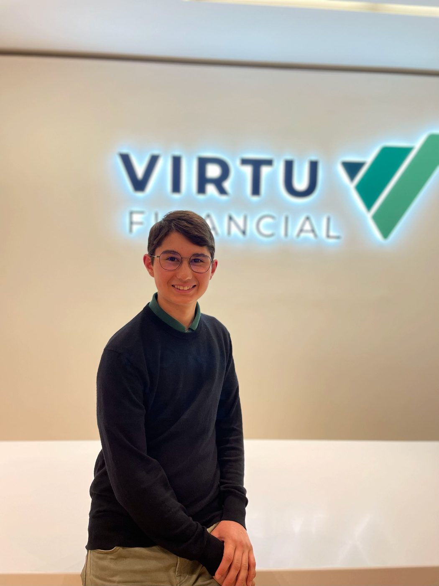
On stage since I was twelve
I was selected among 25 students to represent Lycée Condorcet Sydney in Ambassadeurs en herbe, the debating competition of French schools abroad; the Asia-Pacific final was cancelled due to COVID-19. As an elected student representative, I gave speeches in front of hundreds of students. In Frankfurt in July 2024, the speaker Arnon Barnes invited me on stage for an impromptu speech in front of more than 200 attendees.
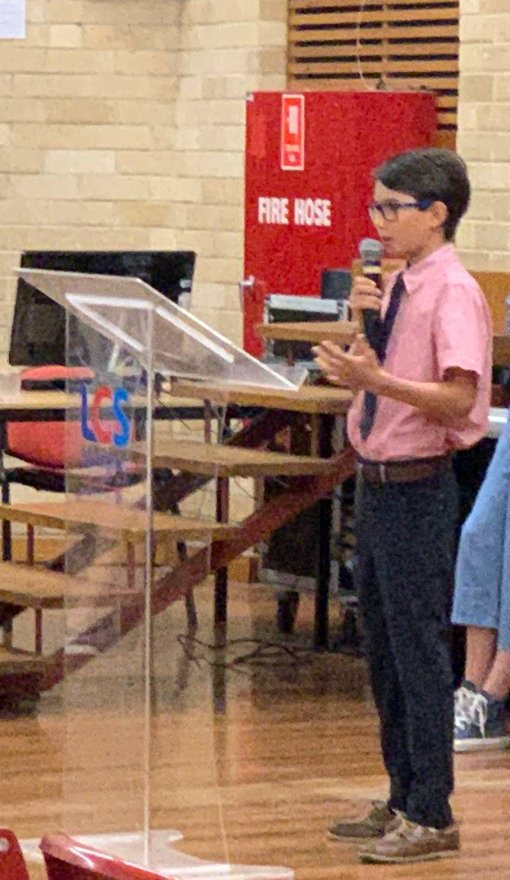
Golf, opera, tailoring and seminars
Golf
Competitive golfer and 2024 Hérault Vice-Champion. Golf has taught me discipline and equanimity: keeping my emotions in check, putting a bad shot behind me, and committing fully to the next one.
I also play tennis occasionally, swim regularly, have sailed with a club and on my grandfather's sailboat, and practised Hapkimudo and Haedong Kumdo in a club (Korean self-defence and sword arts).
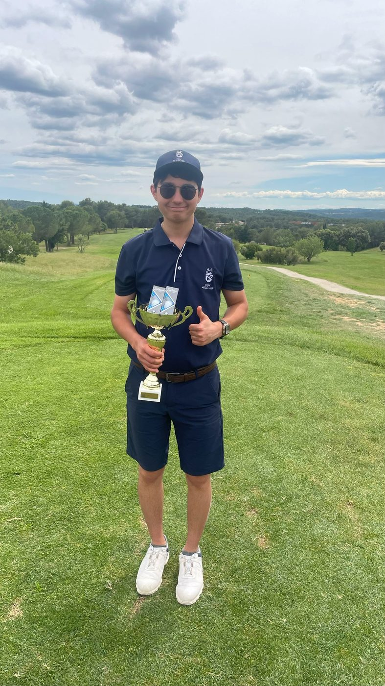
Opera
A passion that started with concerts at the Sydney Opera House when I was eleven, and most recently took me to the Hungarian State Opera in Budapest.
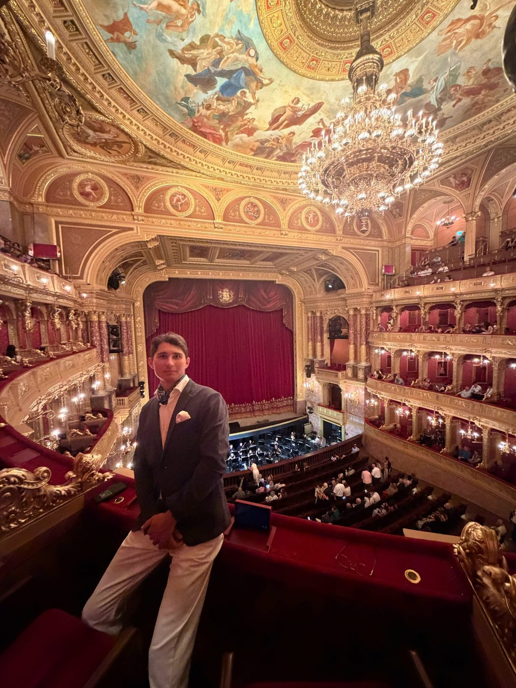
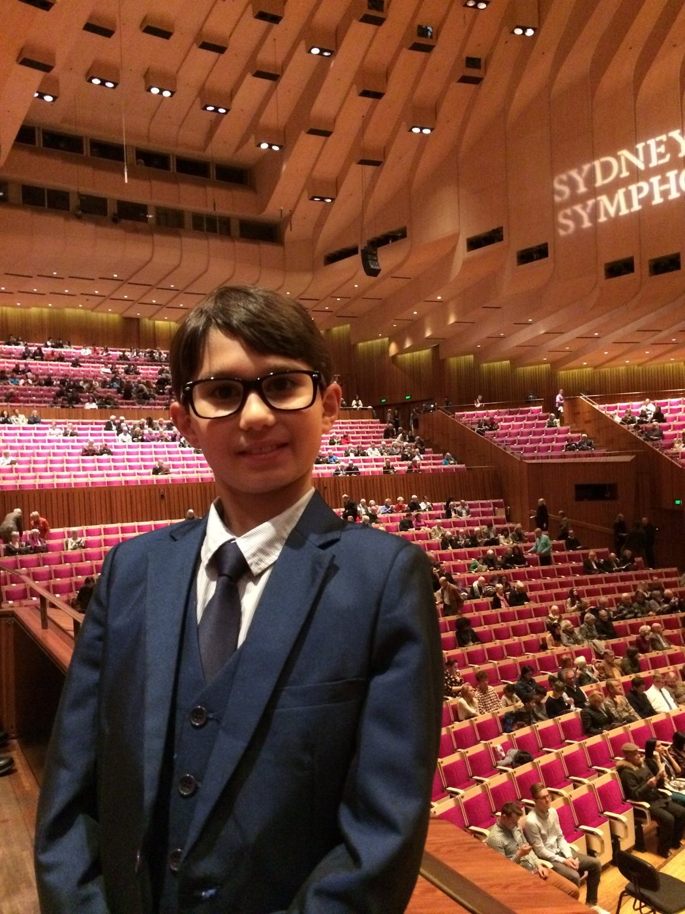
Sartorial art
I care about tailoring: the cloth, the fit, and the exact length of a jacket sleeve.
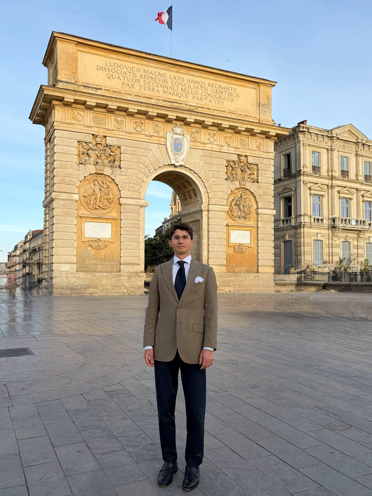
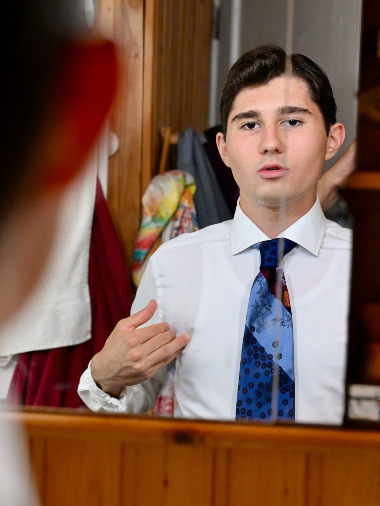
Business seminars with my father
From the age of eleven, my father and I went to business and personal-development seminars together, in Australia, Switzerland and Germany. They taught me to set ambitious goals, take responsibility for them, and act.
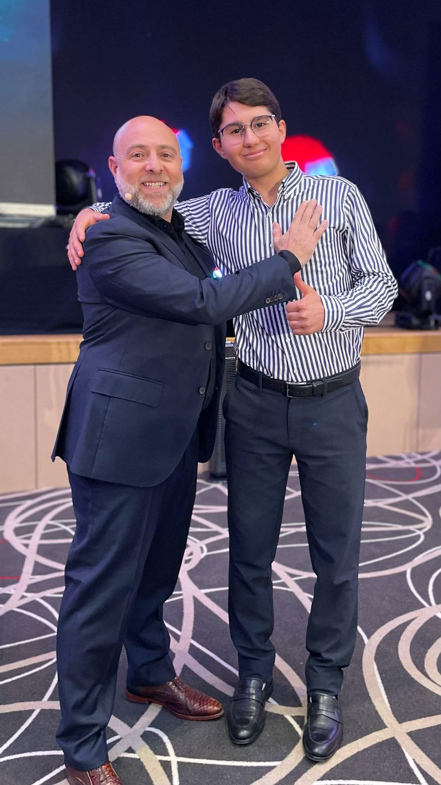
How you do anything is how you do everything.
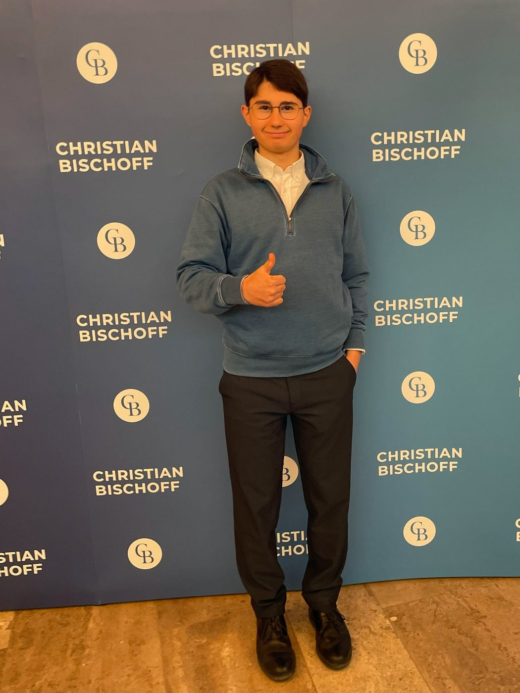
It is what it is, and it will be what you make of it.
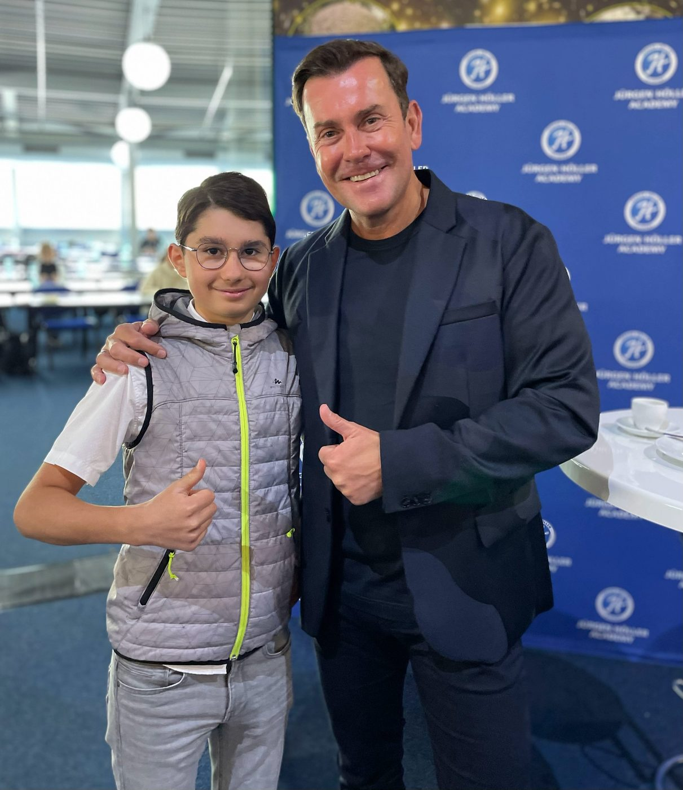
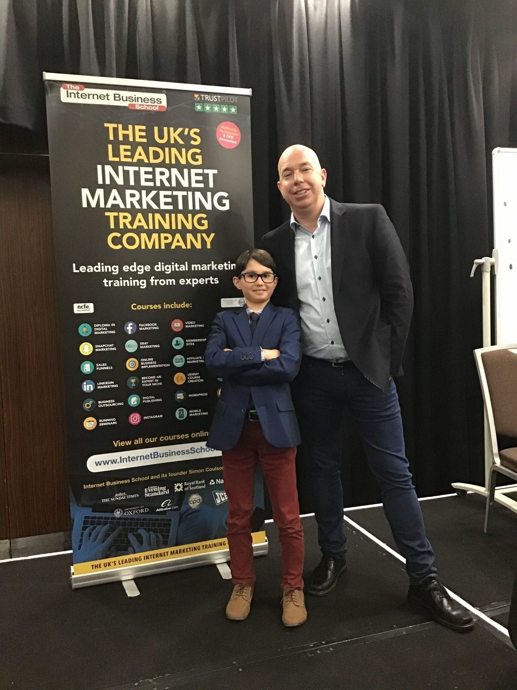
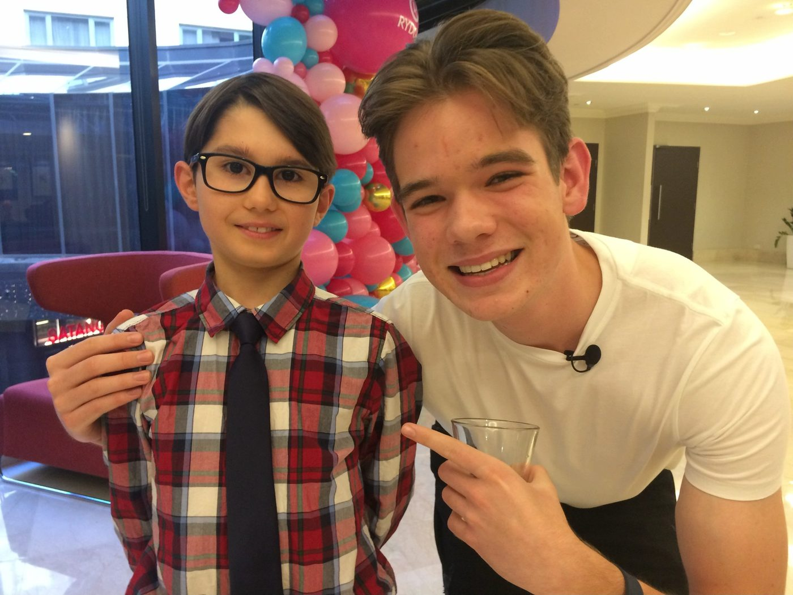
Get in touch
Email or LinkedIn is the best way to reach me.